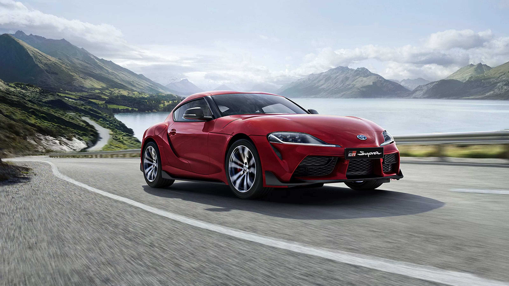
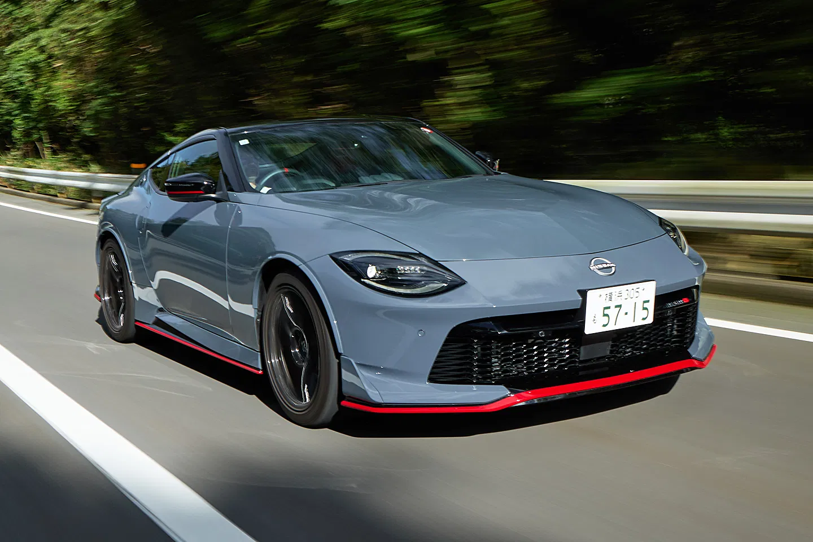
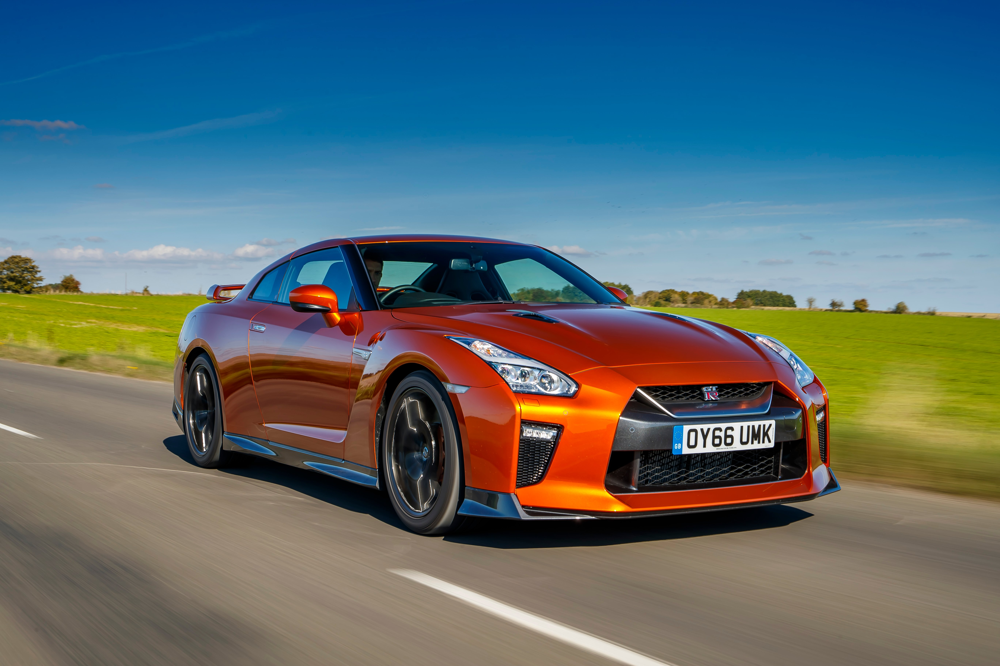
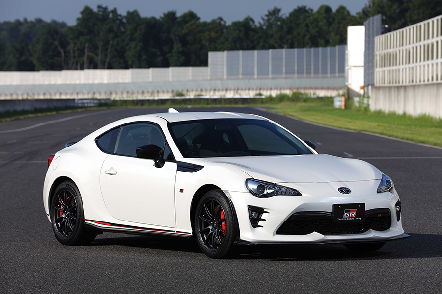

Welcome to Wheels on Fire
Your one-stop shop for all things automotive. Whether you're looking for the latest car models, expert reviews, or tips on maintaining your vehicle, we've got you covered.
Explore our site to find out more about our services and how we can help you keep your wheels on fire!
You want Hot Chicks? Drive Hot Wheels!
Car of the Week - Toyota GR Supra

Explore More Vehicles
Nissan

Nissan GT-R
The Nissan GT-R is a high-performance sports car known for its speed, advanced technology, and iconic design. It features a powerful twin-turbo V6 engine, all-wheel drive, and a sophisticated suspension system, making it a favorite among car enthusiasts.

Nissan Z
The Nissan Z is a legendary sports car that combines classic design with modern performance. It boasts a turbocharged V6 engine, rear-wheel drive, and a driver-focused interior, delivering an exhilarating driving experience for enthusiasts.

Nissan 370Z
The Nissan 370Z is a sleek and sporty coupe that offers impressive performance and handling. With its V6 engine, rear-wheel drive, and agile chassis, the 370Z provides an exciting driving experience for those who appreciate classic sports car dynamics.
Mazda

Mazda - Model A
Sharp styling and enjoyable driving dynamics make Mazda models a favourite for drivers seeking a balance of performance and comfort.

Mazda - Model B
Modern design cues with efficient powertrains offer a compelling package for everyday driving and weekend fun.
Toyota

Toyota GR Supra
The GR Supra combines sharp handling, turbocharged power, and a driver-focused cockpit — engineered for performance and daily usability.
Toyota Supra (MK4)
An iconic sports car celebrated for its legendary 2JZ engine and timeless tuning potential among enthusiasts worldwide.
Toyota Hilux
Known for rock-solid reliability, the Hilux pairs rugged capability with practicality — a favourite for work and adventure.
Subaru
Subaru Impreza WRX STI
A rally-bred performance car with turbocharged power and all-wheel drive, built for fast corners and confident driving in any weather.
Subaru BRZ
A lightweight, rear-wheel-drive sports coupe focused on balance and driver engagement with a responsive chassis and sharp steering.
Subaru Outback
A practical crossover with generous ground clearance and rugged capability for family trips and outdoor exploration.
Suzuki
Suzuki Swift Sport
Compact, nimble, and fun to drive — the Swift Sport delivers punchy performance in a small, efficient package.
Suzuki Jimny
A tiny off-roader with surprising capability, known for its rugged ladder frame and go-anywhere attitude.
Suzuki Vitara
A versatile compact SUV offering a comfortable ride, good economy, and an affordable entry into crossover ownership.
Isuzu
Isuzu D-Max
A durable pickup built for heavy-duty work and towing, prized for its ruggedness and long-term reliability.
Isuzu MU-X
A family-friendly SUV based on the D-Max platform, offering space, comfort, and off-road capability for long journeys.
Isuzu Trooper
A classic, capable 4x4 known historically for rugged utility — included here as a nod to Isuzu's off-road heritage.